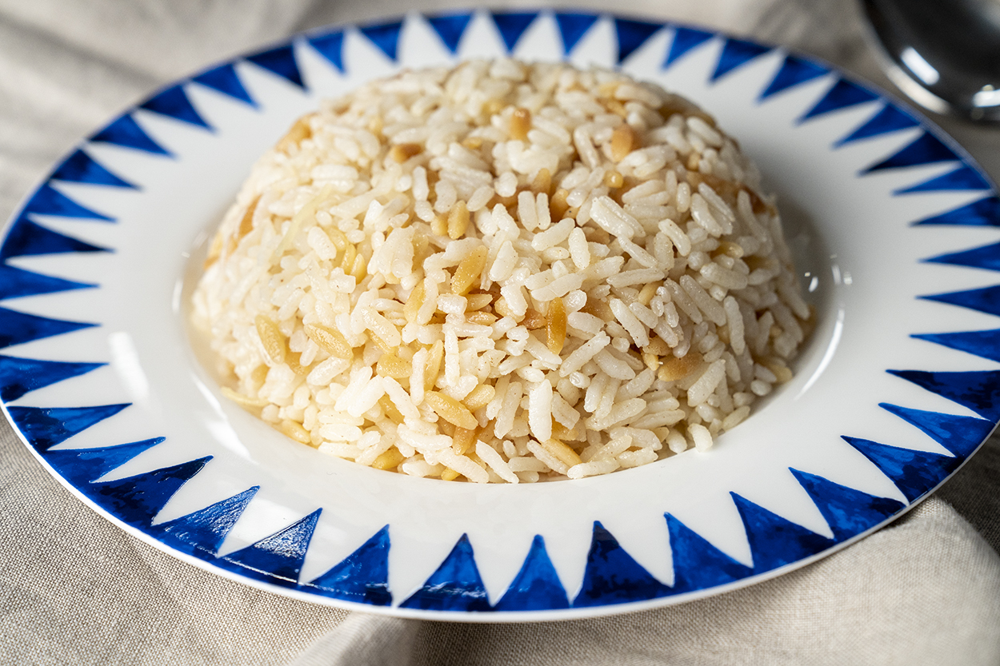
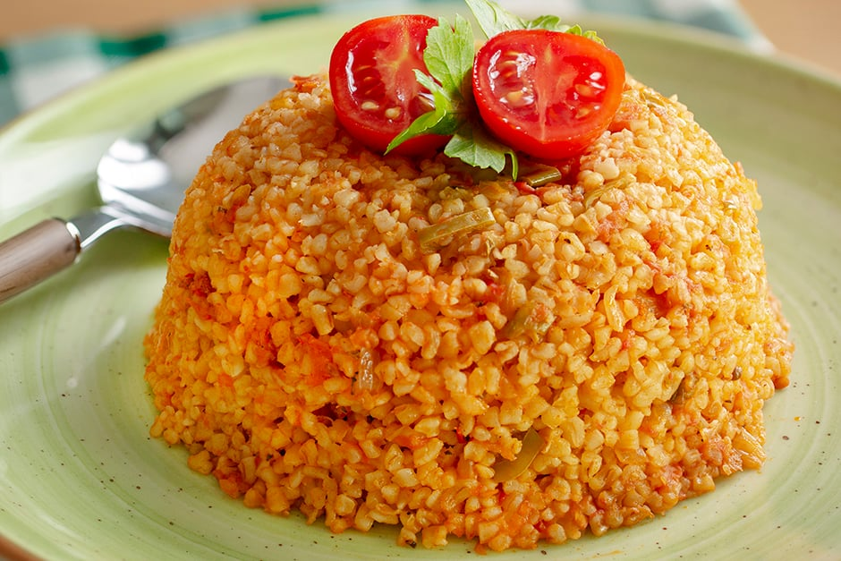
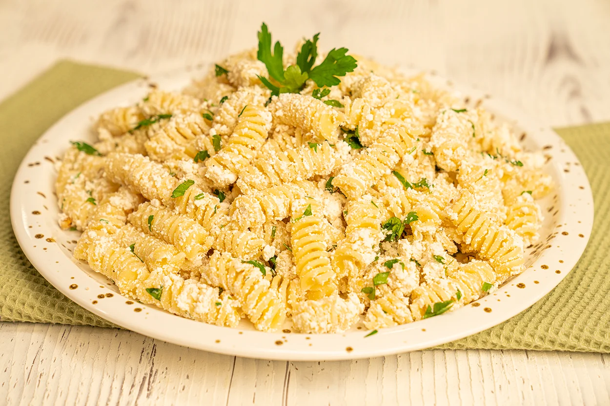

PASTA&RICE
-

- 2 cups long-grain rice
- 3 cups water
- 2 tablespoons butter or vegetable oil
- 1 medium-sized onion (optional, chopped)
- Salt
- Place the rice in a bowl and wash it thoroughly with cold water. Washing helps remove excess starch from the rice.
- Drain the washed rice.
- In a pot, melt butter or heat vegetable oil over medium heat. Add the chopped onion, if using, and sauté until translucent.
- Add the drained rice to the pot. Stir and sauté the rice until it becomes opaque and well-coated with the butter or oil.
- Add water and salt to the pot. Stir and bring the mixture to a boil.
- Once boiling, reduce the heat to low, cover the pot with a lid, and simmer for about 15-20 minutes or until the rice has absorbed the water.
- After the rice has absorbed the water, remove the pot from heat but keep the lid on. Let the rice rest without opening the lid for about 10 minutes. This resting time allows the rice to continue steaming and fluffing up.
- After resting, use a fork or spatula to gently fluff the rice, ensuring it stays light and fluffy.
Rice Pilaf
Ingredıents:

Bulgur Pilaf
Ingredıents:
- 2 cups fine bulgur
- 2 tablespoons butter or vegetable oil
- 1 medium-sized onion (optional, chopped)
- 1 teaspoon tomato paste (optional)
- 3 cups hot water or chicken broth
- Salt
- Place the bulgur in a bowl and pour hot water over it. Cover the bowl and let the bulgur swell. (Approximately 15-20 minutes)
- In a pot, melt butter or heat vegetable oil over medium heat.
- Optionally, add chopped onion and sauté until translucent.
- If using, add tomato paste and stir until its aroma is released. Sauté for a few more minutes.
- Add the swollen bulgur to the pot and transfer it by stirring.
- Add salt. If using hot water, pour it into the pot; if using chicken broth, adjust the water amount accordingly.
- Stir the mixture once, then simmer on low heat until the liquid is absorbed.
- When the pilaf absorbs the liquid, cover the pot and let it rest for about 10 minutes for the bulgur to steam.
- Stir the rested bulgur pilaf before serving.

Chesnut Pilaf
Ingredıents:
- 1 cup fine bulgur
- 1 cup chestnuts (boiled, peeled, and chopped)
- 1 medium-sized onion (chopped)
- 2 tablespoons butter or vegetable oil
- 1/2 cup raisins (optional)
- 1/2 cup roasted pine nuts or almonds (optional)
- 2 cups chicken broth or water
- Salt
- In a pot, melt the butter or heat the vegetable oil. Add chopped onion and sauté until translucent.
- Add chopped chestnuts and sauté for a few more minutes.
- Add fine bulgur and stir, sautéing for a couple of minutes until well-coated with the butter or oil.
- Optionally, add raisins and roasted pine nuts or almonds.
- Pour in chicken broth or water. Add salt to taste.
- Bring the mixture to a boil, then reduce the heat, cover the pot with a lid, and let it simmer until the liquid is absorbed.
- Once the liquid is absorbed, remove the pot from the heat, keep the lid on, and let it rest for about 10 minutes.
- Fluff the pilaf with a fork before serving.

Pasta With Tomato Sauce
Ingredıents:
- 350 grams pasta (of your choice)
- 2 tablespoons olive oil
- 1 medium-sized onion (optional, chopped)
- 3 cloves of garlic (optional, minced)
- 1 cup tomato paste
- 1 teaspoon sugar
- Salt and black pepper to taste
- Grated Parmesan cheese or fresh chopped parsley for garnish (optional)
- Cook the pasta in salted water according to the package instructions. Once cooked, drain and set aside.
- In a large skillet, heat the olive oil. Add the chopped onion and garlic, if using, and sauté until they become translucent.
- Add the tomato paste to the skillet and sauté for a few minutes over low heat.
- Season the tomato paste with sugar, salt, and black pepper. Mix well and cook for about 5-7 minutes.
- Add the cooked pasta to the sauce. Toss the pasta until it is well coated with the sauce and cook for a few more minutes.
- Optionally, garnish with grated Parmesan cheese or fresh chopped parsley before serving.

White Cheese Pasta
Ingredıents:
- 350 grams pasta (of your choice)
- 200 grams white cheese (grated or crumbled)
- 2 tablespoons butter
- 2 tablespoons olive oil
- 1 clove garlic (optional, grated or minced)
- Freshly ground black pepper
- Freshly chopped herbs -parsley, basil, etc. (optional)
- Salt
- Cook the pasta in salted water according to the package instructions. Once cooked, drain and set aside.
- In a wide pan, melt the butter and olive oil. Optionally, add the grated or minced garlic and sauté briefly.
- Add the cooked pasta to the pan and toss it well with the butter and olive oil mixture.
- Add the grated white cheese and mix until it melts and coats the pasta evenly.
- Season with freshly ground black pepper. If needed, add salt, considering the saltiness of the cheese.
- Optionally, garnish with freshly chopped herbs or an extra drizzle of olive oil.
- Serve hot and optionally, sprinkle with additional grated white cheese or fresh herbs.